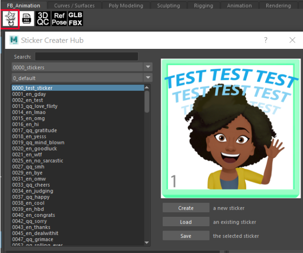
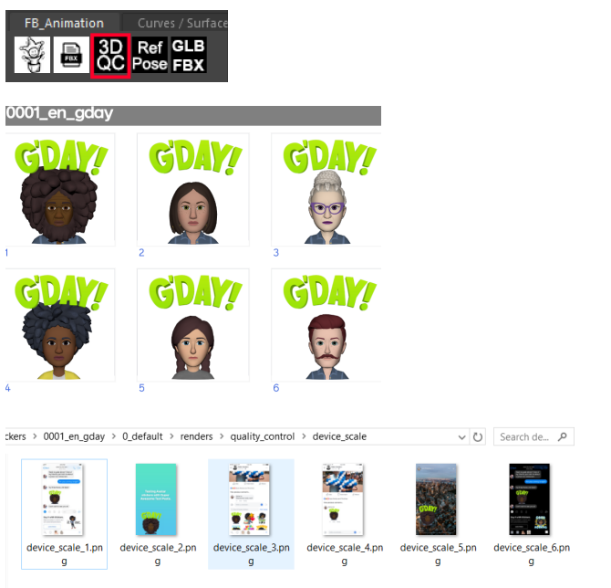
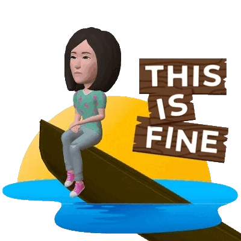

Meta / Facebook Avatars
Technical Artist on the Facebook/Meta Avatar sticker team. Collaborated with cross-functional engineering and art teams to create and manage artist pipelines for the 2.5D and 3D Avatar Sticker character products.
Key Achievements
- Built and managed the artist/vendor pipeline between Maya, Photoshop, Blender, Illustrator, Perforce, Shotgrid, Spark, and the proprietary Facebook render ecosystem
- Created several new product feature pipelines, including profile pics, cover photos, text posts, and customizable looks like jewelry, tattoos, and DEI user options
- Programmed Photoshop menu plugins and templates to automate repetitive designer tasks for thousands of assets
- Coded an automated QA tool that generated test images and compositions for creative review
- Built and automated the customizable emoji reaction product matching to avatar features
- Migrated Maya tools from generic GUI boxes to customized, dynamic, polished Python QT windows


Link to the original 2D Facebook Avatar Stickers →
The success and popularity of our product led the company to focus more resources on building a 3D version that we adapted our pipeline to use.
3D Avatar Evolution
- Prototyped and engineered shader and lighting solutions to increase mobile render performance
- Designed and created interactive AR/VR experiences with Facebook's proprietary real-time tool, Spark
- Wrote a Maya toolshelf of creation and posing tools for 3D artists with PyQT
- Programmed a Blender pipeline to round trip convert customized glb assets into poseable fbx Maya scenes
- Worked cross-functionally with London-based engineers to increase performance
- Prototyped and collaborated to create the first working animated sticker product and build a functional, performant 3D animated sticker pipeline

Meta updates 3D avatars for Instagram, Facebook, Messenger →